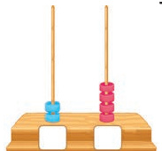
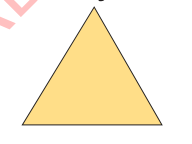

Jaribio la 3
1.
Andika namba zinazokosekana
3, 4, 5, [[blank:item-1]], 7, [[blank:item-2]], 9
2.
Andika makumi na mamoja
| makumi | mamoja | |
| 26 | ||
| 9 | ||
| 61 | ||
| 93 |
3.
35 - 31 = [[blank:item-11]]
4.
72 + 19 = [[blank:item-12]]
5.
26 - 6 = [[blank:item-13]]
6.
48 - 21 = [[blank:item-14]]
7.
34
+ 25
[[blank:item-15]]
8.
76
+ 9
[[blank:item-16]]
9.
Andika namba inayowakilishwa na abakasi.
makumimamoja

=
10.
86
- 46
[[blank:item-18]]
11.
43
+ 25
[[blank:item-19]]
12.
Makumi 7, mamoja 3 = [[blank:item-20]]
13.
Makumi 8, mamoja 0 = [[blank:item-21]]
14.
Makumi 0, mamoja 5 = [[blank:item-22]]
15.
Andika jina la umbo lifuatalo.

16.
Sakafu ya darasa ina umbo gani?
17.
Mama alikuwa ana kuku 90. Aliuza kuku 25. Walibaki kuku wangapi?
18.
Ashura ana machungwa 87. Amenunua machungwa mengine 13. Jumla ana machungwa mangapi?
19.
Andika thamani ya nafasi ya tarakimu za namba 48.
20.
Chora abakasi inayowakilisha namba 35.
FOR ONLINE READING ONLY